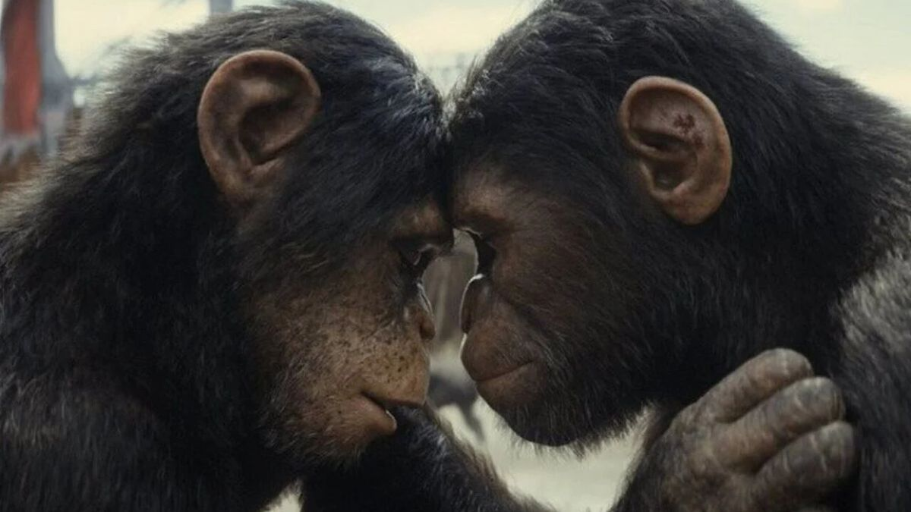
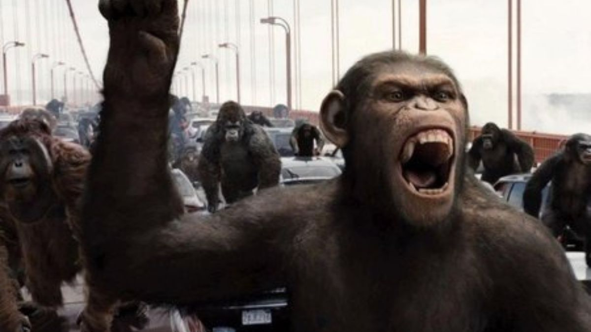

El planeta de los simios (2011)

Publicado el 28 de mayo de 2025
Un experimento científico da origen a César, un simio con inteligencia avanzada. El conflicto entre humanos y simios comienza cuando la humanidad pierde el control. Una metáfora sobre la ética científica y la evolución social.
La historia de César es profundamente conmovedora: su vínculo con su cuidador humano, su traición y su despertar como líder simbólico de una nueva especie generan empatía y reflexión sobre el trato que damos a los otros seres vivos.
Las escenas de acción se entrelazan con dilemas morales, cuestionando hasta qué punto el avance de la ciencia justifica la manipulación de la naturaleza. César representa un nuevo comienzo, pero también un quiebre con la humanidad.